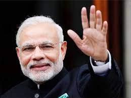

PM Narendra Damodardas Modi

Born on 17th September 1950 {Current Age 70 Years }
10 Most Important Things of Our Prime Minister
- He is the party leader of the Bharatiya Janata Party (BJP), one of India's two major political parties.
- Modi is described as a controversial leader due to his affiliation with the Hindu-nationalist BJP and his association with the 2002 riots in Gujarat, a state in west India. The riots left more than a thousand people dead, the majority of which were Muslim. Critics of Modi have accused him of stirring up anti-Muslim sentiment, but a special committee appointed by India's Supreme Court found nothing to charge him with.
- 2005, the U.S. revoked Modi's tourist visa, a decision influenced by his failure to quell the deadly Gujarat riots years earlier. As the prospects of his ascension to prime minister grew more likely, the U.S. worked to improve relations and welcomed him to visit. Modi met with President Barack Obama during his first trip to Washington in September 2014.
- Just over a month before he was elected prime minister, Modi revealed he was married, technically, after avoiding the question on election registries for years. Though the marriage was a "formality," according to a statement from Modi's oldest brother, Modi left the village and marriage shortly after their wedding. He was 17 at the time.
- Modi officially joined the BJP in 1987, but he had been a member of political anti-corruption movements and demonstrations since 1972.
- Modi earned a political science degree from Delhi University in 1978 and completed master's work at Gujarat University in 1983.
- Members of Modi's childhood village, Vadnagar, recalled Modi didn't often help his father with the tea stall that he ran, and Modi enjoyed theater at school.
- Modi never lost an election.
- Since becoming prime minister, one of Modi's top priorities has been to modernize India.
- Known for his attire, Modi inspired what's known as the Modi Kurta, "a revisionist version of the classic Indian tunic shirt with half-length sleeves," according to The New York Times.
"Don't Dream To Be Something But Rather Dream To Do Something Great"
-Narendra Modi
If You Have More Time Then You Should Read More About Such A Great Human Beings on Visit Him In wikipedia